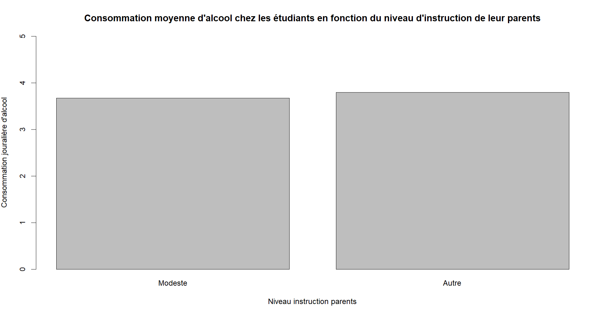
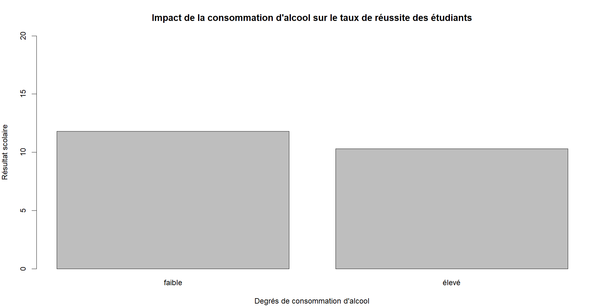

Ce document est un rapport portant sur un projet de mathématique appliquer au Big Data. Dans ce raport, nous vous présenterons dans un premier temps les membres ainsi que leur rôle dans le projet. Nous enchênerons avec la description du sujet et de ses finalités. Nous poursuivrons avec un descriptif des données utilisé. Puis, nous parlerons de notre méthodologie de travail et terminerons par les résultats.
Dans cette partie, nous allons présenter chaque membre de l'équipe ainsi que leur rôle dans ce projet. Dans ce groupe, nous somme 2. Nous avons travailer ensemble afin de créer le script d'extraction de données. De même, pour la premier question, nous avons tout les deux travaillés sur la partie d'échantillonage et de test d'hyothèse. ALCARAZ Yannick viens d'un BTS et a fait la L3 MIAGE. Il a eu pour tâche de faire la question 2 et 3 en plus des échantillonages, test d'hypothese et de la génération des graphiques. CORBIERE Nicolas viens d'un IUT et a fait la L3 MIAGE. Il a eu pour tâche de faire la question 1 ainsi que le rapport. Il a beacoup contribuer sur l'extration des données et sur les test d'hypothèse.
Nous allons maintenant rentrer dans le vif du sujet en vous parlant du sujet ainsi que ses finalités.
Ce projet s'intéresse a consommation d’alcool chez les jeunes etudiants et l'impacte de ceci sur les résultats scolaire. Nous avons pour finalité de prouver que la conssomation d'alcool a un impacte négatif sur les résultats des étudiant0.
Afin de pouvoir prouver notre hypothèse, nous avons utiliser une base de données sur des étudiant portugais incluant, entre autre, leur consommation d'alcool et leur résultats scolaire. Nous avions deux base, l'une portant sur les résultats en math et l'autre sur les résultats en portugais. Notre première tâche fut alors de fusionner ces deux bases afin de pouvoir traiter toutes les information correctement. De plus, la conssomation d'alcool est notée via un indice allant de 1 (pas beaucoup) a 10 (beaucoup).
Vous retrouverez ci-dessous la base de donnée ainsi que des infotmations complémentaire :
Dans cette partie, nous allons expliquer notre méthodologie de travail. Tout d'aords, nous avons commencer a mettre en place un repertoire git afin de pouvoir facilement partager notre code. Pour la création d'échantillons, nous prenons de manière aléatoire un certain nombre d'individues parmis la base. Suite a cela, nous proposons des hypothèse et les verifions grace a des test d'hypothèse.
Pour finir, nous allons vous préseter les résultats que nous avons obtenue. Nous avons répondue a 3 questions et pour chacune d'entre elle, nous avons fait des tests d'hypothèse.
Ici, nous voulons vérifier si les étudiants de niveau modeste consomme plus d'alcool que les autres étudiants.
Apres avoir calculer la moyenne de consommation d'alcool journalier des étudiants avec deux parents de niveau d'instruction modeste, nous nous retrouvons avec un indice de conssomation moyen de 3,67. Nous avons ensuite calculer la moyenne pour tous les étudiant n'ayant pas deux parents de milieu modeste et nous avons trouver 3,79. Nous pouvons en conclure que les étidant de niveau moyen ne consomme pas forcémnt plus d'alcool.
Graphique :
Nous avons ensuite formuler deux hypothèse:
Pour H0, nous avons obtenue un résultat égal a 0,822. Cette valeur est supérieur a alpha (0.05). De ce fait, nous ne rejetons pas notre hypothèse H0.
Pour H1, nous avons obtenue un résultat égal a -1,70. Cette valeur est inférieur a alpha (0.05). De ce fait, nous rejetons notre hypothèse H1.
Ici, nous voulons vérifier si les étudiants ne consommant pas beaucoup d'alcool réussissebt mieux dans leurs études.
Pour se faire, nous avons comparer les étudiant avec une consomation d'alcool journalier inférieur a 6 et des étudiants avec une consomation d'alcool journalier supérieur a 5. Nous avons ensuite comparer la moyenne de leur note. Au final, les personne ne buvant pas beaucoup d'alcool on une moyenne de 11,80 alors que les buveur se retrouve avec 10,29. Nous pouvons en conclure que les étudant ne buvant pas beaucoup d'alcool on de meilleurs résultats.
Graphique :
Nous avons ensuite formuler deux hypothèse:
Pour H0, nous avons un résultat égal a 0,808. Cette valeur est supérieur a alpha (0,05). De ce fait, nous ne rejetons pas notre hypothèse H0.
Pour H1, nous avons un résultat égal a -1,157. Cette valeur est inférieur a alpha (0,05). De ce fait, nous rejetons notre hypothèse H1.